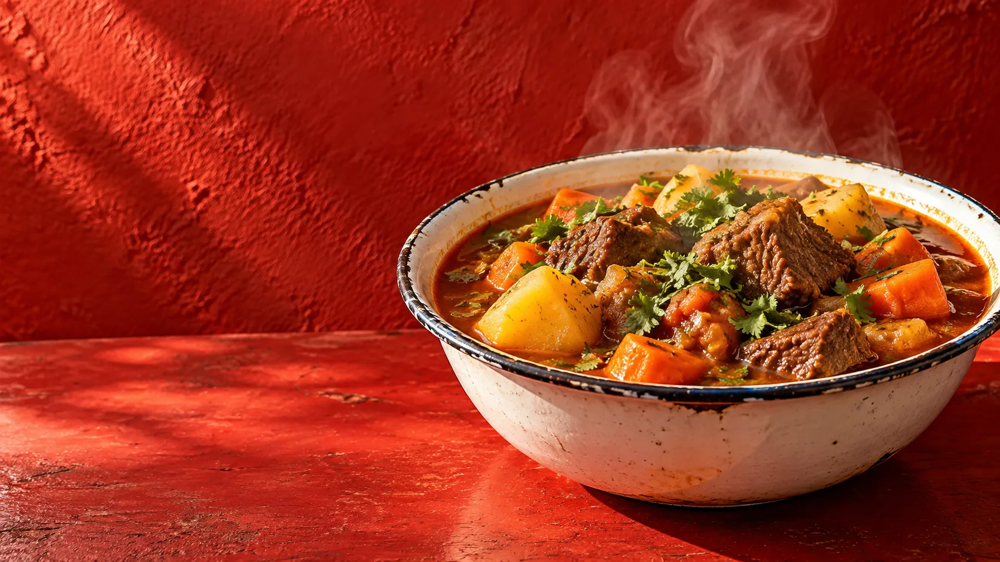

Um dos mais pedidos
Cozido de boi
Caldoso, bem temperado e servido com pirão.
R$ 16,99 de segunda a sexta
Da manhã à noite em Messejana
Sabor caseiro, prato farto e aquele tempero que faz a mesa ficar cheia.
Da panela para a mesa
A mesma mesa se abre em planos, como o almoço chegando aos poucos: prato, acompanhamento, conversa e repeteco.
Monte uma prévia. A equipe confirma disponibilidade, guarnições, retirada ou entrega e o valor final no WhatsApp.
Escolha um prato no cardápio acima.
Rua Angélica Gurgel, 610
Messejana, Fortaleza
Segunda a sábado, das 8h às 22h